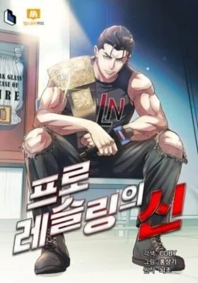
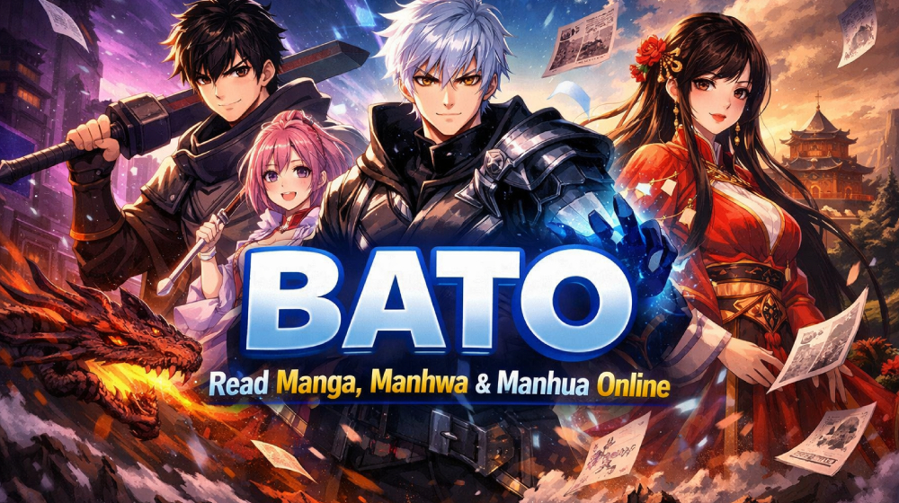

Batoto – Read BL Manga, Manhwa & Yaoi Online Free (2026)


Finding a single reading platform that genuinely centres Boys' Love — not just tags it as an afterthought — took years of community trial and error. Batoto came out of that frustration. After testing more than a dozen aggregator sites across Korean manhwa, Japanese yaoi and Chinese danmei manhua, our editorial team keeps returning to Batoto for one reason: every layer of the product, from the genre taxonomy to the image CDN, was designed around the BL reader rather than bolted onto a general-purpose manga site. No registration walls, no coin timers, no obstructive overlays mid-chapter. Open a title, read it — full stop.
Trending This Week


Reader Favorites


What is Batoto?
Batoto runs on a clear editorial principle: Boys' Love readers deserve a platform built around them, not one where BL is a single checkbox buried inside a 60-genre dropdown. General aggregators collect everything and tag loosely; Batoto inverts that model by starting with the BL catalogue and expanding outward from there. Our team monitored the platform across multiple release cycles — fast-paced Korean scanlation teams, slower Japanese groups, prolific Chinese danmei projects — and found chapter availability consistently within the same day as the original group drop. That reliability is what turns casual visitors into regular readers.

Five Reasons Batoto Holds Up Under Scrutiny
- BL-native taxonomy: Distinct tags for yaoi, shounen-ai, omegaverse, ABO dynamics and danmei — not a single catch-all label that mixes everything together
- Source-faithful image delivery: Chapters render at the resolution the scanlation team uploaded, with no backend re-compression applied
- Friction-free entry: Any chapter URL opens directly in the browser — no email wall, no age-gate modal, no countdown timer before content appears
- Same-day chapter availability: For active series with responsive scanlation teams, uploads typically land on Batoto within hours of the group's own release post
- Local reading history: Progress is stored in the browser's local storage, meaning your place is saved across sessions without requiring a signed-in account
Inside the Batoto Reader: What Actually Changes Your Experience
Batoto's reader makes deliberate format choices informed by how different comic styles are meant to be read. Korean manhwa and Chinese manhua — both produced as vertical webtoon strips — default to continuous long-strip scroll. Japanese tankobon manga defaults to paginated mode with right-to-left page order. Neither requires manual setup on your first visit. A thin progress indicator at the bottom of the viewport tracks position through a chapter without covering the artwork, unlike the wide overlay bars seen on heavier competitors.
On desktop, left and right arrow keys (or A/D) advance pages without moving your hand to the mouse. On mobile, edge-tap zones handle forward and back navigation — a gesture system that keeps thumb travel minimal during long multi-chapter sessions. Reader display preferences persist between visits through localStorage, so a width or zoom setting chosen today remains active on your next session without signing in.
Ad Behaviour and Day-to-Day Safety on Batoto
We ran Batoto through repeated browsing sessions on both desktop and mobile, specifically watching for the ad patterns that generate the most reader complaints on similar platforms. No forced redirects occurred. No fake virus alerts or deceptive download overlays appeared during chapter reads. Display ads were present but rendered within page flow rather than as full-screen interruptions. A standard browser extension (uBlock Origin or equivalent) handles those without affecting reader functionality. Practical precautions that apply regardless of site: avoid comment-section links from unfamiliar accounts, and do not enter personal information into any prompt that appears while reading.
Honest Assessment: Where Does Batoto Stand Legally?
Batoto indexes scanlations — fan-produced translations created without publisher authorisation. No licensing agreement with any manga, manhwa or manhua publisher covers the content hosted through the platform. Whether accessing scanlations falls within or outside local copyright law varies by jurisdiction, and that variability is a genuine limitation rather than a minor footnote. For titles with active official English licences — through publishers such as Seven Seas Entertainment, Yen Press, Lezhin Comics or Tokyopop — purchasing the licensed edition is both the legally unambiguous option and the most direct path to supporting the original creators.
Batoto vs MangaDex vs Manganelo — Detailed Comparison
| Criterion | Batoto | MangaDex | Manganelo |
|---|---|---|---|
| Editorial BL Focus | Platform-wide, BL-first design | General catalogue, BL well-tagged | General catalogue, minimal BL curation |
| Ad Density | Low — in-page display only | Near zero — community-funded | High — interstitials present |
| Image Fidelity | Source resolution, no re-encoding | Upload-quality, group-controlled | Server-side compression applied |
| Account Required | No — anonymous read access | No — anonymous read access | No — anonymous read access |
| Chapter Turnaround | Same-day for active series | Group-paced, high reliability | Rapid aggregation, variable quality |
| Mobile Rendering | Responsive, WebP delivery | Responsive, community reader options | Responsive but ad-heavy on small screens |
Batoto Strengths and Known Limitations
Where Batoto Excels
- Entirely free to use — no chapter locks, no coin economy, no tiered access of any kind
- The only major reading platform with an editorial identity built exclusively around Boys' Love and yaoi
- Lightweight page architecture delivers fast first-load times even on throttled mobile connections
- Scanlation group credits appear on every chapter — readers always know who produced the translation they're reading
- Genre filters use vocabulary that BL communities actually use: omegaverse, ABO, danmei, enemies-to-lovers — not generic dropdown options
Genuine Drawbacks Worth Knowing
- Catalogue is fan-translated only — officially licensed BL editions are not available through Batoto
- Domain reachability can vary by country and ISP; a VPN may be needed in some regions
- No dedicated offline or download mode; continued reading depends on an active internet connection and browser cache
If Batoto Doesn't Meet Your Needs — Vetted Alternatives (2026)
- MangaDex — Community-governed, strict upload standards, strong BL representation; our top pick for translation quality
- Lezhin Comics — Paid, fully licensed Korean BL catalogue; the definitive destination for official webtoon releases
- ComicK — Rapid aggregation across all genres; best suited to readers tracking many simultaneous series
- Webtoon — Official manhwa portal with a growing BL and GL section from original debut creators
- Manga Plus by Shueisha — Ad-light, fully legal Japanese titles; narrow BL selection but zero-cost and publisher-authorised
Batoto FAQ — Direct Answers to Reader Questions
Does Batoto charge anything to use?
Nothing at all. Batoto operates with no freemium split, no coin wallet, no locked premium chapters and no subscription tier. Every title and every chapter on the platform is accessible at zero cost — no payment method required, no account creation needed.
Can I read on Batoto without registering?
Yes. Anonymous reading access covers the entire catalogue on Batoto. The optional account system exists only to sync bookmarks and reading history across multiple devices — it does not unlock any content that anonymous visitors cannot already access.
How does the legality of Batoto work?
Batoto distributes fan-made scanlations, not content published under licence. Whether accessing fan translations is lawful in your jurisdiction depends entirely on local copyright statutes — there is no universal answer. If a title you enjoy on Batoto has received a licensed English release, that edition is the legally straightforward choice and the most meaningful way to compensate the author and their publisher.
Which official platforms should I use instead?
For BL specifically: Lezhin Comics holds the widest licensed catalogue of Korean BL webtoons. Webtoon Canvas covers original creator-published BL works. Manga Plus (Shueisha) provides ad-free, legally published Japanese manga at no cost — though its BL selection is limited compared to specialised platforms.
What genre categories does Batoto use?
Batoto applies granular BL-specific tags rather than a single genre label. Available categories include shounen-ai, yaoi, omegaverse, ABO dynamics, danmei (Chinese BL), romance, drama, fantasy, historical, school-life, supernatural, isekai and 18+ adult content — supplemented by trope-level sub-tags covering dynamics such as enemies-to-lovers, age-gap relationships and reincarnation narratives.
How current are the chapters on Batoto?
Chapter availability on Batoto depends on scanlation group activity. For series with prolific, fast-moving teams — particularly popular Korean manhwa — new chapters regularly appear the same day the group publishes. Use the "Latest" sort on the homepage to filter for chapters added within the past 24 hours across the full catalogue.
Does Batoto work properly on phones and tablets?
Batoto's interface is fully responsive and functions across iOS Safari, Android Chrome and the major third-party mobile browsers. WebP image delivery and lazy-loading reduce data consumption during extended reading sessions, making Batoto viable even on limited mobile data plans.
Batoto — Why BL Fans Built a Dedicated Platform Instead of Using the Big Sites
The frustration that gave rise to Batoto is one long-time BL readers know well: major aggregators prioritise shonen, isekai and action because those genres drive the largest share of total traffic. Boys' Love gets a tag and a filtered view, but the homepage, the staff recommendations, the featured titles and the thumbnail real estate all skew toward demographics that aren't the BL audience. Batoto exists because that tradeoff was unacceptable to a community that reads BL exclusively and deserves a product that reflects that.
The practical consequences show up in unexpected places. On Batoto, "New Releases" actually means new BL releases — not a mixed feed where you scroll past fifty unrelated titles to find the one genre you came for. The staff recommendations are made by people who read in the genre they curate. The genre filter page doesn't bury omegaverse under a parent category labelled "Other." These are small decisions that compound into a meaningfully different user experience.
Reducing Wait Times Between Chapters on Batoto
Chapter-chasing across an ongoing series is where reading platform performance becomes tangible. Batoto pre-fetches image assets for the next page while the current one is still being read, eliminating the loading gap between swipes that breaks immersion on lower-quality readers. On desktop, arrow-key navigation removes mouse dependency entirely during long sessions — a quality-of-life detail that matters more across a 60-chapter manhwa than a one-shot. On mobile, dedicated edge-tap zones handle pagination so that thumb movement stays minimal regardless of how long the reading session runs.
Display preferences — image width, reader mode, brightness — persist across sessions via localStorage without requiring a login. Readers who set their preferred configuration once do not need to reconfigure it on subsequent visits, even after clearing cookies, because the settings live in local storage rather than a server-side profile.
Using Batoto's Filter System to Find Exactly What You Want
Discovering a new series to follow is one of the highest-friction parts of using any reading platform. Batoto reduces that friction through three combinable filter axes:
- Genre and trope: Yaoi, shounen-ai, omegaverse, ABO dynamics, danmei, historical romance, school-life, fantasy BL, supernatural and explicit 18+ adult — each a discrete category, not a single parent tag
- Origin and format: Japanese manga (right-to-left paginated), Korean manhwa (vertical long-strip), Chinese manhua and short-form one-shot anthologies — separated so readers do not accidentally commit to a 200-chapter series when they wanted something self-contained
- Publication status: Ongoing, completed, on hiatus or dropped — filtering to completed series before starting removes the risk of investing in a title that will never be finished
Any combination of these filters can be applied simultaneously. Results update without a page reload and without resetting the other active filters — a usability standard that most competing aggregators still do not meet consistently.
Staying Current with Scanlation Drops Through Batoto
Release timing is a social dynamic in BL fandom, not just a content delivery question. Discussions on subreddits, Discord servers and Twitter timelines move within hours of a chapter drop, and readers who fall behind by even a day enter those conversations already spoiled. Batoto's chapter feed operates on near-real-time availability — uploads appear as they finish processing rather than accumulating for scheduled batch delivery.
The follow system on Batoto is intentionally minimal. Adding a title to a reading list requires two interactions: navigate to the series page, activate the follow button. After that, the title surfaces at the top of the personalised dashboard the moment a new chapter is published — no algorithmic reordering, no notification settings to configure, no email address required. The list stays chronological and does not deprioritise titles based on engagement signals.
Batoto Quick Reference Card
- Access cost: Zero — no subscription, no coins, no chapter locks anywhere on Batoto
- Account requirement: Optional — full catalogue access is available without registration; sign in only to enable cross-device bookmark sync
- Device compatibility: Desktop (Chrome, Firefox, Safari, Edge) and mobile (iOS Safari, Android Chrome) — fully responsive at all screen widths
- Release cadence: Daily chapter additions; same-day availability for active series on Batoto
- Content scope: Fan-translated BL manga, manhwa and manhua exclusively — licensed content requires one of the official platforms listed in the alternatives section above
Legal Notice
Disclaimer: This page does not host, upload, store or distribute any copyrighted content on its own servers. All descriptions refer to a third-party platform. Information is provided for reference and educational purposes only. All manga, manhwa and manhua titles remain the intellectual property of their respective authors, publishers and rights holders.